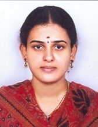

SOUMYA A
Research scholar
Indian Institute of Technology Hyderabad(IITH)
Email: cs21resch15003@iith.ac.in
Research scholar
Indian Institute of Technology Hyderabad(IITH)
Email: cs21resch15003@iith.ac.in
Soumya A. is a researcher specializing in computer vision, machine learning, and deep learning. She is currently pursuing a Ph.D. in the Department of Computer Science and Engineering at the prestigious Indian Institute of Technology Hyderabad (IIT Hyderabad). She previously obtained her M.Tech. degree in Computer Science and Engineering from Jawaharlal Technological University Hyderabad (JNTUH) in 2012 and her B.Tech. degree in Information Technology from JNTUH in 2007. Her research interests encompass several advanced domains, including LiDAR and camera-based perception, deep learning for autonomous systems, and real-time scene understanding. Her contributions to these fields are demonstrated through her publications in high-impact journals and leading conferences. She also served as an Assistant Professor in the Department of Computer Science and Engineering at Christu Jyothi Institute of Technology & Science, Hyderabad, with over 10 years of distinguished teaching experience. Her academic journey is marked by a profound commitment to technological education.
Christu Jyothi Institute of Technology & Science | 10 Years
In-Charge HOD & M.Tech CSE Course Coordinator
B.Tech. in Information Technology from Jawaharlal Technological University, Hyderabad, India (2007).
M.Tech. from Jawaharlal Technological University, Hyderabad, India (2012).
Ph.D. (Currently pursuing) in Computer Science and Engineering, Indian Institute of Technology (IITH), Hyderabad, India.
Recognized for outstanding academic performance.
Actively contributing to technological advancements and research.
Successfully organized and managed prestigious conferences.
 LinkedIn
LinkedIn